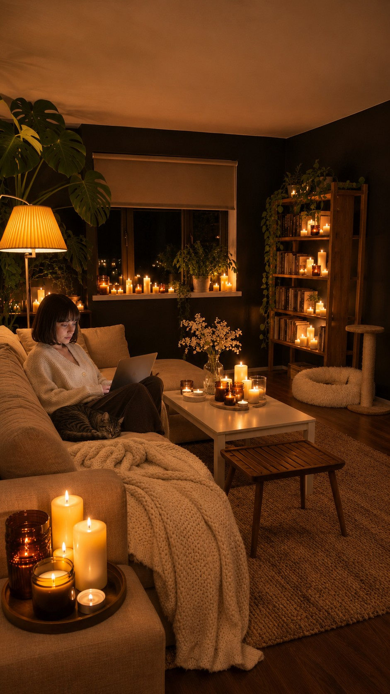
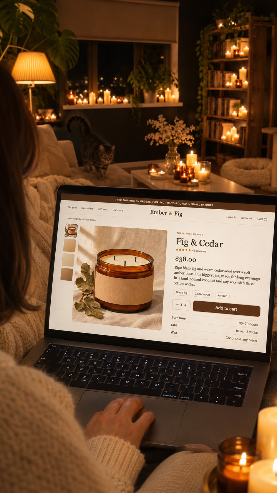
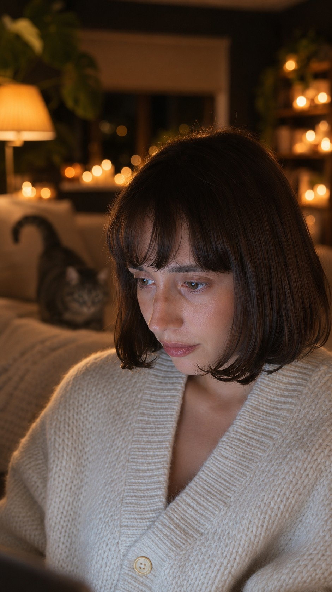
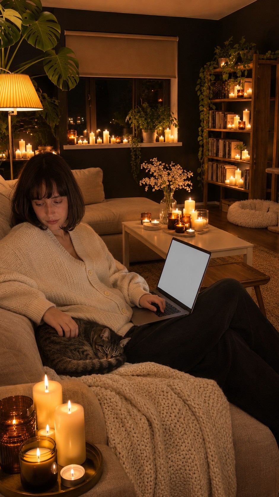
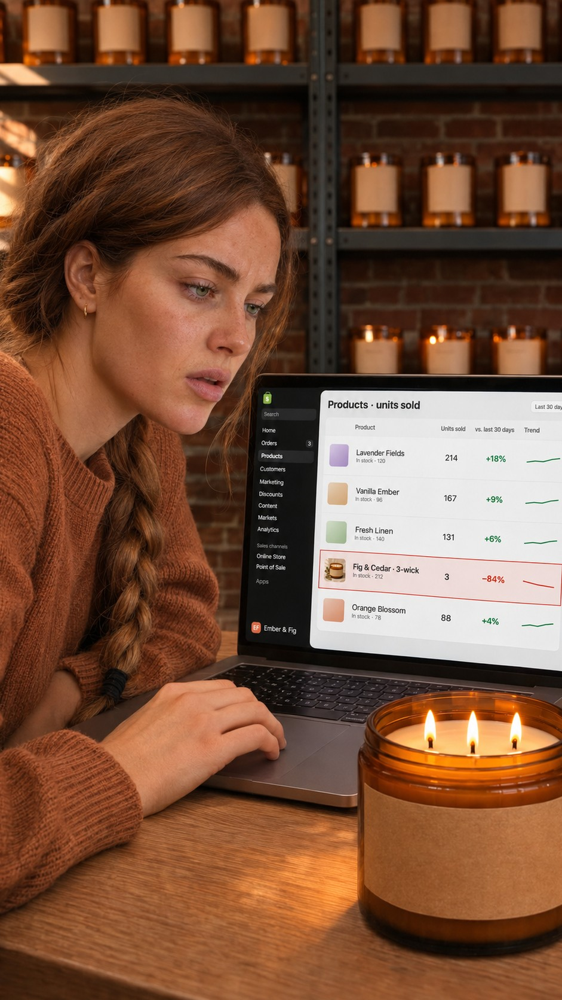

Are these safe for cats?
- A cat lady sits on her sofa at night; candles burn all over her apartment, her cat beside her.
- She scrolls the Fig & Cedar page up and down, searching. She never buys. No ka-ching.
- Inner voice, lips closed, the camera circling her: Are these safe for cats?
- She finds nothing, gets annoyed (shown only), closes the site: I guess we'll never know.
- High flip down to the owner reading Fig & Cedar sales: I guess no one's interested in Fig and Cedar. No one wants this. Time to discontinue the product line. She blows out the candle.
- Scout: Don't guess why your shoppers don't buy. End screen: Scout interviews your shoppers for you. Get free early access.
Shot listTime · who · what · line · assets. The keyframe shown is the still Seedance gets for that range.
| Time | Keyframe | Who | What | Line | Assets |
|---|---|---|---|---|---|
| 0-3s |  | Shopper, cat | Opening shot. Wide, slow arc toward her: on her sofa, the cat beside her, candles everywhere. | — | @Image1 @Image10 @Image11 |
| 3-5s |  | Shopper | Hard cut. Over her shoulder: she scrolls the Fig & Cedar page down, then back up. She never clicks Add to cart. | — | @Image2 @Image10 |
| 5-8s |  | Shopper, cat | Hard cut. Close-up, the camera slowly circles her face, lips closed. | Are these safe for cats? (inner voice) | @Image3 @Image10 @Image11 @Audio2 |
| 8-10s | Shopper | Hard cut. Medium close-up: she scrolls faster, finds nothing; jaw tight, sharp exhale, rubs her brow. Silent. | — | @Image4 @Image10 | |
| 10-13s |  | Shopper, cat | Hard cut. She closes the site, leans back and looks at the cat. | I guess we'll never know. (inner voice) | @Image5 @Image10 @Image11 @Audio2 |
| 13-15s | Shopper → owner | High flip: the camera rises over her until it looks straight down, the back of the sofa sweeps across the frame as the view flips, and it comes out level on the owner at her desk. | — | @Video2 @Image10 @Image9 | |
| 15-21s |  | Owner, jar | Lands from the High flip. She reads units sold, Fig & Cedar at 3 (−84%), the lit jar beside her; she sighs. | I guess no one's interested in Fig and Cedar. No one wants this. Time to discontinue the product line. | @Image6 @Image9 @Image12 @Audio1 |
| 21-23s | Owner, jar | Hard cut. Close-up: she blows out the Fig & Cedar candle; three flames out, smoke rises. | — | @Image7 @Image9 @Image12 | |
| 23-25s | Jar | Hard cut. Macro on the smoking wicks, the studio dims. | Don't guess why your shoppers don't buy. (Scout, off screen) | @Image8 @Image12 @Audio3 | |
| 25-30s | End screen | Hard cut. The H158 end screen. | Scout interviews your shoppers for you. Get free early access. (Scout, off screen) | @Video1 @Audio3 |
What Seedance getsOnly the files uploaded to the job, in upload order. Nothing else on this page is sent.
The 8 keyframes, in order
All 17 uploads
12 images, 2 videos (9.5 s), 3 voice clips (21.0 s). Old voice clips lend timbre only; their old words are never used.
Wide: her candle-filled apartment at night, laptop on her lap, the cat beside her.
media c697ff6f…Over her shoulder: the Fig & Cedar page, fingers on the trackpad, no cursor.
media d438ef78…Close-up: her face, lips closed, the cat soft behind.
media fe2a7a8c…Annoyed, jaw tight, rubbing her brow.
media 2b9f194e…Site closed, an empty browser; she looks at the cat.
media aad0bb02…The owner reads units sold: Fig & Cedar 3, −84%. The lit jar.
media 56cc5bd1…She blows out the Fig & Cedar candle.
media bf1210ad…Three smoking wicks, the studio dims. No person.
media 5ab451e5…
Face and braid only. Not its background or pose.
media 1963a66d…Face and bob only. Not its background or open mouth.
media 1db5a36d…
The grey tabby only. Not the sofa behind it.
media 5d1a06f3…
The jar only. Not its background or the fig leaf.
media b8de2f05…Picture only. Not its sound.
media cae62718…Camera move only. Not its people, chair, room, colours or sound.
media 969c55f0…Timbre, pace, emotion. Not its words.
media c2ed3b9e…Timbre, pace, emotion. Not its words.
media 2049a920…Timbre, pace, emotion. Not its words.
media 1040c108…The prompt Seedance getsCompiled with the sd25-pe skill. Ratio and duration are set in the job, not in the text.
Use @Image1 to @Image8 in order as keyframes.
【Generation Goal】
Generate a live-action story ad: a shopper cannot find whether the Fig & Cedar candle is safe for cats and leaves; the owner reads the flat sales as nobody wanting it and blows out the candle. Please note that this is not video editing.
【Reference Asset Roles】
Use @Image1 as the first frame.
This first frame defines the shopper's candle-filled living room at night, wide: the shopper on the sofa, laptop open on her lap, the cat curled beside her.
@Image2 defines the second keyframe: over the shopper's shoulder, the Fig & Cedar page.
@Image3 defines the third keyframe: the shopper's face, lips closed.
@Image4 defines the fourth keyframe: the shopper annoyed, rubbing her brow.
@Image5 defines the fifth keyframe: the shopper leaning back, the cat beside her.
@Image6 defines the sixth keyframe: the owner at her desk, the units-sold list, the lit jar.
@Image7 defines the seventh keyframe: the owner blowing out the jar.
@Image8 defines the eighth keyframe: the jar's smoking wicks.
The film passes through @Image1 to @Image8 in order, with no static hold.
@Image9 is used only for the owner's facial features and auburn side braid; do not use its background or pose.
@Image10 is used only for the shopper's facial features and dark bob with bangs; do not use its background or its open mouth.
@Image11 is used only for the grey tabby cat; do not use its background.
@Image12 is used only for the Fig & Cedar jar's look; do not use its background or the fig leaf.
@Video1 is used only for the picture of the end screen at 25-30s; do not use its sound.
@Video2 is used only for the High flip camera move at 13-15s; do not use its people, chair, table, cards, food, room, colours or sound.
@Audio1 is used only for the owner's voice timbre and pace; do not use its words or its bright mood.
@Audio2 is used only for the shopper's inner-voice timbre and pace; do not use its words or its excited mood.
@Audio3 is used only for Scout's voice timbre, pace and emotion; do not use its words.
【Subjects and Relationships】
One shopper (@Image10) and her cat (@Image11) in her apartment; her candles are plain, never the Fig & Cedar jar. One owner (@Image9) in her studio, where the one Fig & Cedar jar (@Image12) is the only candle on her desk and the shelf candles behind her are other scents; its photo is on the product page. The women never meet. Nothing is bought.
【Event Script】
0-3s (reference: @Image1) [Opening shot. Wide, slow arc toward her]: The shopper (@Image10) on her sofa, the cat (@Image11) beside her, candles burning everywhere. At the end, she is looking at her laptop.
3-5s (reference: @Image2) [Hard cut. Over her shoulder, static]: The shopper's (@Image10) fingers scroll the Fig & Cedar page down, then back up; she never clicks Add to cart. At the end, the page is still open.
5-8s (reference: @Image3) [Hard cut. Close-up, the camera slowly circles around her face]: The shopper (@Image10) reads; the cat (@Image11) soft behind her.
The shopper (@Image10), inner voice, lips closed, in the voice of @Audio2, wondering, in English: {Are these safe for cats?} At the end, her lips stay closed.
8-10s (reference: @Image4) [Hard cut. Medium close-up, static]: The shopper (@Image10) scrolls faster, finds nothing; her jaw tightens, a sharp exhale through her nose, she rubs her brow, silent. At the end, her hand drops.
10-13s (reference: @Image5) [Hard cut. Medium, static]: The shopper (@Image10) closes the site to an empty browser window, leans back, her face flat and tired, and looks down at the cat (@Image11) curled beside her, her hand resting on it.
The shopper (@Image10), inner voice, lips closed, in the voice of @Audio2, resigned, in English: {I guess we'll never know.} At the end, she is still looking at the cat.
13-15s (reference: @Video2) [High flip, the only non-cut transition]: The camera rises over the shopper (@Image10) until it looks straight down, the back of the sofa sweeps across the frame as the view flips, and it comes out level on the owner (@Image9) at her desk. At the end, the camera is level in the studio.
15-21s (reference: @Image6) [Lands from the High flip. Medium, small push in]: The owner (@Image9) reads the units-sold list, Fig & Cedar at 3, -84% in red, the lit jar (@Image12) beside the laptop; she sighs.
The owner (@Image9), on screen, lips moving, in the voice of @Audio1, flat, disappointed, in English: {I guess no one's interested in Fig and Cedar. No one wants this. Time to discontinue the product line.} At the end, she is looking at the jar.
21-23s (reference: @Image7) [Hard cut. Close-up, static]: The owner (@Image9) leans in and blows out the Fig & Cedar jar (@Image12); its three flames go out and smoke rises. At the end, no flame is lit.
23-25s (reference: @Image8) [Hard cut. Macro, static]: The jar's (@Image12) three smoking wicks; the studio light dims. No person on screen.
Scout, off screen, in the voice of @Audio3, calm, in English: {Don't guess why your shoppers don't buy.} At the end, a thin thread of smoke remains.
25-30s (reference: @Video1) [Hard cut. End screen]: The end screen follows the picture of @Video1.
Scout, off screen, in the voice of @Audio3, calm, friendly, in English: {Scout interviews your shoppers for you. Get free early access.} At the end, @Video1's last frame holds.
【Maintain Consistency】
Live action, warm candlelight. Hard cuts, except the High flip. Keep both women's faces, clothes and hair stable. The owner's mouth stays closed while Scout speaks. Exactly three voices. No ka-ching, no notification, no cart. (Soft, warm piano plays very low under speech) Generate dialogue strictly as written. No subtitles appear on screen.
Illustration, not sent to Seedance
The shared empty room (the same room as the sister cards). It was the reference for keyframes 1-5, so her apartment matches; the keyframes carry it into the job.
History and checks
Seedance check (SD25-CHECK.md): Final Checklist, Principles 1-11, who-is-which-asset per shot
Open SD25-CHECK.md · job-plan.json (media ids) · our draft before the compile
Eval log (two fresh checks, both Goal fit YES)
What changed from the last round
The old story (she almost buys, a ka-ching, Scout's orb pops up, "Don't guess. Ask them.") is replaced by Emile's Nov 15 story. All 8 keyframes are redrawn; the orb still and the cursor-on-Add-to-cart page are gone; the cat and the jar get their own images. Same technique, same faces, same High flip clip and end screen. Previous page: index.pre-catstory.html.